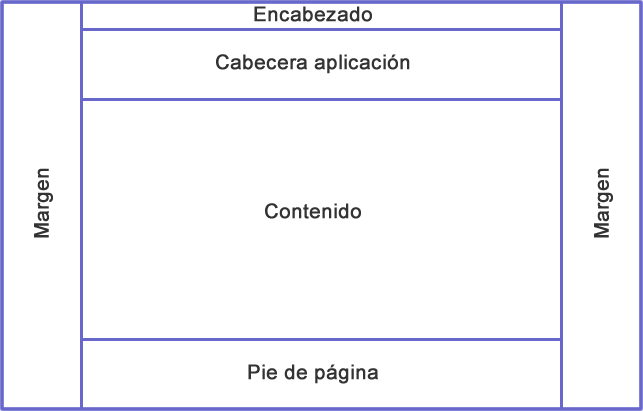
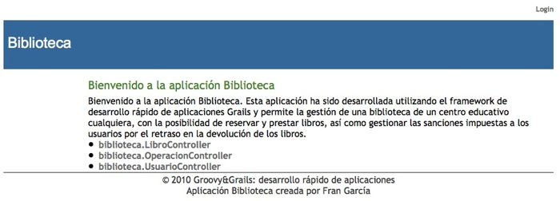

Construir la interfaz de usuario (I)
En la sesión anterior vimos como, gracias al scaffolding de Grails, pudimos construir una aplicación con unos requisitos mínimos. En esta sesión, vamos a ver una primera parte que tratará sobre como mejorar la aplicación desde el punto de vista del usuario final. Básicamente, veremos como funcionan las plantillas en Grails y que etiquetas podemos utilizar en dichas plantillas. Para practicar con las plantillas y las etiquetas, seguiremos desarrollando nuestra aplicación y le añadiremos la posibilidad de que nuestros usuarios se identifiquen en el sistema.
Plantillas
La siguiente imagen es un boceto de la estructura que tendrá nuestra aplicación web de cara al usuario final. En la parte superior tendremos una barra (Encabezado) donde nos aparecerá el típico enlace de muchas aplicaciones web para identificarnos en el sistema. Debajo de esta barra, tendremos un apartado que nos mostrará el título de nuestra aplicación, para seguidamente disponer de una zona donde poder trabajar con nuestra aplicación y realizar todas las operaciones posibles. Por último, en la parte inferior podemos ver el típico pie de página donde se indicarán unos datos relativos a la aplicación y los derechos de la misma.

Si comparamos nuestra aplicación con el boceto que acabamos de presentar, quedan algunos flecos que vamos a solventar.
Como la mayoría de los frameworks existentes en el mercado para el desarrollo de aplicaciones, Grails dispone de un sistema de plantillas el cual permite el renderizado de las páginas web de la aplicación. En Grails las plantillas se ubican en el directorio grails-app/views y su nombre siempre empieza por un subrayado bajo. No olvides uno de los lemas en que se basa Grails, Convención sobre Configuración y este subrayado no es más que otra convención utilizada para indicarle al sistema que ese archivo es una plantilla. Además, las buenas prácticas de programación indican que cualquier plantilla relacionada con una clase de dominio deben estar alojadas todas en un directorio, como por ejemplo grails-app/views/usuario/_miplantilla.gsp. De igual forma, aquellas plantillas que vayan a ser utilizadas de una forma más genérica en varias clases de dominio, deben alojarse en un lugar común, por ejemplo en grails-app/views/common. Las plantillas tendrán extensión GSP que significa Groovy Server Pages y son el equivalente a los JSP de Java.
Si echamos un vistazo a nuestra aplicación, podemos detectar al menos un par de plantillas comunes a lo largo de toda la aplicación que serán las correspondientes al encabezado y al pie de página. Recuerda que estas plantillas irán alojadas en el directorio common. Para ir entrando en calor, vamos a empezar creando con NetBeans la plantilla que nos mostrará el pie de página de nuestra aplicación.
Nuestra primera plantilla: el pie de página
En primer lugar hay que comentar, que las plantillas en Grails tendrán extensión GSP, que son las siglas GSP correspondientes a Groovy Server Pages y son los archivos análogos a los JSP de Java. Los archivos GSP permiten controlar la vista de las aplicaciones desarrolladas en Grails y tienen una sintaxis especial que veremos en profundidad más adelante.
La primera plantilla que vamos a crear en Grails se va a llamar _footer.gsp y puesto que es una plantilla que se utilizará a lo largo de toda la aplicación, la ubicaremos en el directorio grails-app/views/common. Esta plantilla contendrá información sobre nosotros, el curso que estamos haciendo y el nombre de la aplicación. Podría quedar algo así:
<span class="copyright"> © 2011 Groovy&Grails: desarrollo rápido de aplicaciones<br/> Aplicación Biblioteca creada por Fran García </span>
Ya hemos creado nuestra primera plantilla y ahora simplemente nos queda añadir la información necesaria para que aparezca en la parte inferior de nuestra aplicación. Para ello, debemos editar el archivo que define las diferentes capas de la aplicación y que está alojado en el directorio grails-app/views/layout/main.gsp. Si editamos este archivo, veremos algo parecido a esto:
<html>
<head>
<title><g:layoutTitle default="Grails" /></title>
<link rel="stylesheet" href="${resource(dir:'css',file:'main.css')}" />
<link rel="shortcut icon" href="${resource(dir:'images',file:'favicon.ico')}" type="image/x-icon" />
<g:layoutHead />
<g:javascript library="application" />
</head>
<body>
<div id="spinner" class="spinner" style="display:none;">
<img src="${resource(dir:'images',file:'spinner.gif')}" alt="Spinner" />
</div>
<div id="grailsLogo" class="logo">
<a href="http://grails.org">
<img src="${resource(dir:'images',file:'grails_logo.png')}" alt="Grails" border="0" />
</a>
</div>
<g:layoutBody />
</body>
</html>
Echando un primer vistazo a este archivo, podremos distinguir las diferentes partes de las que hasta el momento consta nuestra aplicación. Lo que vamos a hacer ahora es añadir la plantilla correspondiente al pie de página (_footer.gsp). Para conseguir esto, Grails dispone de la etiqueta <g:render>, a la que podemos pasarle un parámetro indicándole que plantilla queremos renderizar. Si después de la línea <g:layoutBody> añadimos <g:render template="/common/footer"/>, podemos comprobar como ahora nuestra aplicación ya muestra un pie de página con nuestra información. El contenido de nuestro pie de página lo hemos envuelto en un div para clarificar un poco el código del archivo main.gsp. Habrás podido comprobar como no es necesario poner ni el subrayado bajo ni la extensión gsp en el parámetro template, puesto que Grails ya lo hace por nosotros.
<html>
<head>
<title><g:layoutTitle default="Grails" /></title>
<link rel="stylesheet" href="${resource(dir:'css',file:'main.css')}" />
<link rel="shortcut icon" href="${resource(dir:'images',file:'favicon.ico')}" type="image/x-icon" />
<g:layoutHead />
<g:javascript library="application" />
</head>
<body>
<div id="spinner" class="spinner" style="display:none;">
<img src="${resource(dir:'images',file:'spinner.gif')}" alt="Spinner" />
</div>
<div id="grailsLogo" class="logo">
<a href="http://grails.org">
<img src="${resource(dir:'images',file:'grails_logo.png')}" alt="Grails" border="0" />
</a>
</div>
<g:layoutBody />
<div id="footer">
<g:render template="/common/footer"/>
</div>
</body>
</html>
Nuestra aplicación ya dispone de un pie de página con la información sobre los creadores de la aplicación. Sin embargo, la apariencia de este pie de página dista bastante de lo que debería ser, puesto que se encuentra demasiado cerca de la zona donde se mostrará el contenido de nuestra aplicación, así que vamos a modificar algunas cosas para que al menos haya una barra separadora y que el texto se encuentre centrado. Esto lo conseguiremos editando la información relativa a los estilos de la página (CSS). La hoja de estilos está ubicada en el directorio web-app/css/main.css y lo que vamos a hacer a continuación es crear una nueva entrada para definir el estilo correspondiente al pie de página. Abrimos la hoja de estilos con NetBeans y al final añadimos este trozo de código que define la apariencia del pie de página.
#footer {
clear:both;
text-align:center;
padding:3px;
border-top:1px solid #333;
}
Otra plantilla algo más complicada: el encabezado
La primera plantilla que hemos creado no nos ha supuesto mucha complicación y era muy sencilla de implementar, pero al menos nos ha servido como introducción al sistema de plantillas de Grails y a comprender como se renderizan estas plantillas en el sistema. La segunda plantilla que vamos a implementar nos va a complicar algo más la vida. Esta plantilla será la que se refiere al encabezado de nuestra aplicación, que deberá mostrar un enlace indicando la palabra login para que cuando los usuarios hagan clic sobre ella, aparecerá un formulario donde el usuario podrá identificarse en el sistema. Ahora bien, ¿qué pasa si el usuario ya se ha identificado? Pues lo que se hace habitualmente es modificar esa primera línea para que en lugar de mostrar un enlace con la palabra login, se muestre una línea con el nombre completo del usuario en cuestión y un enlace para que abandone el sistema de forma segura. Eso es lo que vamos a hacer con esta segunda plantilla.
En primer lugar, vamos a modificar el archivo grails-app/views/layout/main.gsp para que en la parte superior de la aplicación, aparezca un encabezado que definiremos posteriormente. El archivo main.gsp quedaría así:
.....
<div id="spinner" class="spinner" style="display:none;">
<img src="${resource(dir:'images',file:'spinner.gif')}" alt="Spinner" />
</div>
<div id="header">
<g:render template="/common/header"/>
</div>
<div id="grailsLogo" class="logo">
<a href="http://grails.org">
<img src="${resource(dir:'images',file:'grails_logo.png')}" alt="Grails" border="0" />
</a>
</div>
.....
Si intentas actualizar ahora la aplicación, verás como Grails nos devuelve un error y esto es debido a que todavía no hemos creado la correspondiente plantilla _header.gsp, así que antes de continuar vamos a crearla en el directorio grails-app/views/common/, puesto que es una plantilla que se utilizará a lo largo de toda la aplicación independientemente de la clase que estemos utilizando en cada momento. Vamos a ver el contenido de esta nueva plantilla y luego lo comentamos más ampliamente.
<div id="menu">
<nobr>
<g:if test="${session.usuario}">
<b>${session.usuario?.nombre} ${session.usuario?.apellidos}</b> |
<g:link controller="usuario" action="logout">Logout</g:link>
</g:if>
<g:else>
<g:link controller="usuario" action="login">Login</g:link>
</g:else>
</nobr>
</div>
Si actualizamos ahora la aplicación en el navegador, veremos como el enlace con la palabra Login queda a la izquierda, lo que no es lo habitual en las aplicaciones web, donde suele aparecer casi siempre en la parte superior derecha de la pantalla. Para solucionar esto, volvemos a editar los estilos de nuestra aplicación y le añadimos las siguientes entradas:
#header {
text-align:left;
width:778px;
margin: 0px;
padding: 5px 0;
}
#header #menu{
float: right;
width: 240px;
text-align:right;
font-size:10px;
}
Ya tenemos alineado a la derecha el texto con la palabra Login, que además, aparecerá en cualquier página de la aplicación. Antes de continuar, vamos a explicar el contenido del archivo grails-app/views/common/_header.gsp. Podemos comprobar como se hace una comprobación para saber si el usuario actual se ha identificado o no en nuestro sistema. Para realizar esta comprobación utilizamos la etiqueta <g:if>, a la que se le pasa el parámetro test con la variable ${session.usuario}. En caso de que esta variable esté ya definida (el usuario ya se ha identificado en el sistema), se mostrará su nombre y apellidos seguido de un enlace para que abandone la aplicación de forma segura. En caso contrario, se le mostrará un enlace con la palabra Login para que se identifique. En ambos casos, se utiliza la etiqueta <g:link> que permite crear enlaces que apunten a una determinada acción de un controlador, tal y como veremos en la próxima sesión.
Si ahora hacemos clic sobre Login, veremos como Grails nos devuelve un error del tipo 404, puesto que no hemos definido nada para que la aplicación actúe en consecuencia. Así que vamos a seguir modificando nuestra aplicación para que tenga la estructura que definimos al principio de la sesión. De ese boceto que especificamos al inicio de la sesión sólo nos queda por definir el encabezado con el nombre de la página web y los márgenes de la misma. El archivo grails-app/views/layout/main.gsp quedaría así:
<html>
<head>
<title><g:layoutTitle default="Grails" /></title>
<link rel="stylesheet" href="${resource(dir:'css',file:'main.css')}" />
<link rel="shortcut icon" href="${resource(dir:'images',file:'favicon.ico')}" type="image/x-icon" />
<g:layoutHead />
<g:javascript library="application" />
</head>
<body>
<div id="page">
<div id="spinner" class="spinner" style="display:none;">
<img src="${resource(dir:'images',file:'spinner.gif')}" alt="Spinner" />
</div>
<div id="header">
<g:render template="/common/header"/>
</div>
<div id="headertitle">
<h1>Biblioteca</h1>
</div>
<div id="content">
<g:layoutBody />
</div>
<div id="footer">
<g:render template="/common/footer"/>
</div>
</div>
</body>
</html>
Como vemos en el código fuente de main.gsp, tenemos bastante diferenciada cada una de las partes de las páginas web de nuestra aplicación. Ahora debemos añadir los nuevos elementos a la hoja de estilos main.css.
#headertitle {
width: 778px;
background: #336699;
height: 70px;
margin: 0px;
}
#headertitle h1 {
font-family: Arial, sans-serif;
color: White;
padding: 20px 0 0 6px;
font-size: 1.6em;
}
body {
margin: 0px;
padding: 0px;
font-family: "Trebuchet MS", Arial, Helvetica, sans-serif;
font-style: normal;
font-variant: normal;
font-weight: normal;
font-size: 13px;
line-height: normal;
font-size-adjust: none;
font-stretch: normal;
color: #333333;
}
#page {
width: 778px;
margin: 0px auto;
padding: 4px 0;
text-align: left;
}
#content {
float: left;
color: #000;
}
Nuestra aplicación empieza a tener algo más de sentido y orden, sin embargo, todavía sigue apareciendo algo que hace referencia al origen de la aplicación, el mensaje de Bienvenida a Grails y el texto que lo acompaña. Para modificar este texto, editamos el archivo grails-app/views/index.gsp y modificaremos dicho texto por uno que explique las características de nuestra aplicación.

Etiquetas
En el apartado anterior, hemos visto algunas de las etiquetas más utilizadas en Grails. Sin embargo, son muchas más las disponibles y a continuación vamos a verlas. El listado que se mostrará a continuación, es sólo un listado de las etiquetas más importantes. El número de etiquetas de Grails crece continuamente gracias al aporte de la cada vez mayor comunidad de usuarios con sus plugins. En sesiones posteriores veremos como instalar y utilizar algún plugin, pero de momento, con estas etiquetas tenemos una primera introducción.
Etiquetas lógicas
Estas etiquetas nos permitirán realizar comprobaciones del tipo si-entonces-sino.
| Etiqueta | Descripción | API |
|---|---|---|
| <g:if> | Evalúa una expresión y actúa en consecuencia | API |
| <g:else> | La parte else del bloque if | API |
| <g:elseif> | La parte elseif del bloque if | API |
Etiquetas de iteración
Son utilizadas para iterar a través de colecciones de datos o hasta que una determinada condición se evalúe a falso.
| Etiqueta | Descripción | API |
|---|---|---|
| <g:while> | Ejecuta un bloque de código mientras una condición se evalúe a cierto | API |
| <g:each> | Itera sobre una colección de objetos | API |
| <g:collect> | Itera sobre una colección y transforma los resultados tal y como se defina en el parámetro expr | API |
| <g:findAll> | Itera sobre una colección donde los elementos se corresponden con la expresión GPath definida en el parámetro expr | API |
| <g:grep> | Itera sobre una colección donde los elementos se corresponden con el filtro definido en el parámetro expr | API |
Etiquetas de asignación
Nos servirán para asignar valores a variables.
| Etiqueta | Descripción | API |
|---|---|---|
| <set> | Define y establece el valor de una variable utilizada en una página GSP | API |
Etiquetas de enlaces
Crean enlaces a partir de los parámetros pasados.
| Etiqueta | Descripción | API |
|---|---|---|
| <g:link> | Crea un enlace HTML utilizando los parámetros pasados | API |
| <g:createLink> | Crea un enlace HTML que puede ser utilizado dentro de otras etiquetas | API |
| <g:createLinkTo> | Crea un enlace a un directorio o un fichero | API |
Etiquetas AJAX
Son las etiquetas empleadas para el uso de recursos AJAX en nuestras aplicaciones.
| Etiqueta | Descripción | API |
|---|---|---|
| <g:remoteField> | Crea un campo de texto que invoca un enlace cuando se modifica el contenido de este campo | API |
| <g:remoteFunction> | Crea una función remota que se invoca con un evento del DOM | API |
| <g:remoteLink> | Crea un enlace que llama a una función remota | API |
| <g:formRemote> | Crea una etiqueta de formulario que ejecuta una llamada a un procedimiento AJAX para serializar los elementos del formulario | API |
| <g:javascript> | Incluye librerías de Javascript y scripts | API |
| <g:submitToRemote> | Crea un botón que ejecuta una llamada a un procedimiento AJAX para serializar los elementos del formulario | API |
Etiquetas de formularios
Las utilizaremos para crear nuestros propios formularios HTML.
| Etiqueta | Descripción | API |
|---|---|---|
| <g:actionSubmit> | Crea un botón de tipo submit | API |
| <g:actionSubmitImage> | Crea un botón de tipo submit con una imagen | API |
| <g:checkBox> | Crea un elemento de formulario de tipo checkbox | API |
| <g:currencySelect> | Crea un campo de tipo select con un listado de monedas | API |
| <g:datePicker> | Crea un elemento de formulario para seleccionar una fecha con día, mes, año, hora, minutos y segundos | API |
| <g:form> | Crea un formulario | API |
| <g:hiddenField> | Crea un campo oculto | API |
| <g:localeSelect> | Crea un elemento de formulario de tipo select con un listado de posibles localizaciones | API |
| <g:radio> | Crea un elemento de formulario de tipo radio | API |
| <g:radioGroup> | Crea un grupo de elementos de formulario de tipo radio | API |
| <g:select> | Crea un elemento de formulario de tipo select combo box | API |
| <g:textField> | Crea un elemento de formulario de tipo text | API |
| <g:textArea> | Crea un elemento de formulario de tipo textarea | API |
| <g:timeZoneSelect> | Crea un elemento de formulario de tipo select con un listado de zonas horarias | API |
Etiquetas de renderizado
Permite renderizar las páginas web de nuestras aplicaciones utilizando las plantillas.
| Etiqueta | Descripción | API |
|---|---|---|
| <g:applyLayout> | Aplica un determinado diseño a una página o una plantilla | API |
| <g:formatDate> | Aplica el formato SimpleDateFormat a una fecha | API |
| <g:formatNumber> | Aplica el formato DecimalFormat a un número | API |
| <g:layoutHead> | Muestra una determinada cabecera para una página | API |
| <g:layoutBody> | Muestra un determinado contenido para una página | API |
| <g:layoutTitle> | Muestra un determinado título para una página | API |
| <g:meta> | Muestra las propiedades meta de una página web | API |
| <g:render> | Muestra un modelo utilizando una plantilla | API |
| <g:renderErrors> | Muestra los errores producidos en una página | API |
| <g:pageProperty> | Muestra una propiedad de una página | API |
| <g:paginate> | Muestra los típicos botones Anterior y Siguiente y las migas de pan cuando se devuelven muchos resultados | API |
| <g:sortableColumn> | Muestra una columna de una tabla con la posibilidad de ordenarla | API |
Etiquetas de validación
Se utilizan para mostrar errores y mensajes de advertencia.
| Etiqueta | Descripción | API |
|---|---|---|
| <g:eachError> | Itera a través de los errores producidos en una página | API |
| <g:hasErrors> | Comprueba si se ha producido algún error | API |
| <g:message> | Muestra un mensaje | API |
| <g:fieldValue> | Muestra el valor de un elemento de un formulario | API |
Primer contacto con los controladores
Ahora que ya tenemos diseñada la interfaz de nuestra aplicación y que ya conocemos algunas de las etiquetas más importantes de Grails, vamos a pasar a añadir algo de funcionalidad. Si recordamos como dejamos nuestra aplicación, al hacer clic sobre Login el sistema nos devolvía un error puesto que no habíamos definido ninguna acción para el controlador, mientras que el comportamiento de la aplicación debería ser mostrarnos una pantalla para que nos identifiquemos en el sistema. Una vez estemos identificados, nos debe aparecer nuestro nombre completo seguido de un enlace con la palabra Logout para que abandonemos el sistema de forma segura. Veamos como hacer esto.
En principio, nuestro sistema de identificación no va a ser muy complicado, ya que simplemente le pediremos al usuario que seleccione que usuario es de todos los disponibles y no comprobaremos su contraseña. Esto lo dejamos para más tarde.
Si nos fijamos en el código utilizado para crear el enlace de la palabra Login, <g:link controller="usuario" action="login">Login</g:link>, detectaremos que se necesitará la acción login() en el controlador de la clase usuario, que se dejará vacía puesto que automáticamente se renderizará la vista de la clase usuario login.gsp con lo que el método login() quedaría así: def login = {}. Pero antes de hacer esto, vamos a crear la vista para la página login.gsp, que deberá ubicarse por convenio en el directorio grails-app/views/usuario. La página login.gsp podría quedar así:
<%@ page import="biblioteca.*" %>
<html>
<head>
<meta http-equiv="Content-Type" content="text/html; charset=UTF-8"/>
<meta name="layout" content="main"/>
<title>Login</title>
</head>
<body>
<div class="body">
<g:if test="${flash.message}">
<div class="message">
${flash.message}
</div>
</g:if>
<p>
Bienvenido a la aplicación Biblioteca. Por favor, identifícate.
</p>
<form>
<span class="nameClear">
<label for="login">
Selecciona el usuario:
</label>
</span>
<g:select name="login" from="${Usuario.list()}" optionKey="login" optionValue="login"></g:select>
<br/>
<div class="buttons">
<span class="button"><g:actionSubmit value="Login" action="handleLogin"/></span>
</div>
</form>
</div>
</body>
</html>
Si analizamos el código fuente de login.gsp, con la línea <meta name="layout" content="main"/> estamos diciendo que el archivo main.gsp actúa como contenedor para el archivo login.gsp. Echando un vistazo al código fuente del archivo main.gsp, veremos la etiqueta <g:layoutBody>. En ese punto será donde se inserte el contenido de la página login.gsp, eliminando las cabeceras innecesarias. Podemos probar a eliminar esa línea para ver sus efectos.
Seguidamente a la definición del div con la clase body, se comprueba que no haya ningún mensaje a mostrar en esta página y en caso de que lo hubiera, se mostraría seguidamente. Este tipo de mensajes llamados Flash los veremos en la sesión 8 en la que ampliaremos toda la información referente a la interfaz de usuario.
A continuación definimos el formulario que servirá para seleccionar al usuario en cuestión. Aquí encontramos aspectos que ya hemos utilizado anteriormente como puede ser el uso del método list() para obtener todos los usuarios del sistema y mostrarlos en el elemento de formulario de tipo select. Este elemento de formulario recibe además otros tres parámetros que son name, que especifica el nombre del elemento de formulario, optionKey, de donde se coge el valor de cada uno de los elementos del select y por último, el parámetro optionValue, que nos servirá para mostrar al usuario la propiedad login de todos los usuarios. Si queremos modificar este parámetro para que en lugar de mostrar la propiedad login nos muestre el nombre y apellidos de cada uno de los alumnos, deberíamos escribir optionValue={nombre} {apellidos}.
Y por último, tenemos la definición del botón de tipo submit que nos llevará al lugar indicado para que se procese la petición de identificación por parte del usuario, en este caso al método handleLogin(), que todavía no hemos definido y que es lo siguiente que vamos a hacer.
Necesitamos añadir un nuevo método al controlador de la clase Usuario que gestione la petición de identificación por parte de los usuarios. Este método se llamará handleLogin() y tendrá el siguiente contenido:
def handleLogin = {
def usuario = Usuario.findByLogin(params.login)
if (!usuario) {
flash.message = "El usuario ${params.login} no existe"
redirect(controller: 'usuario', action:'login')
return
}
else {
session.usuario = usuario
redirect(controller:'operacion')
}
}
Analicemos este método paso a paso. En primer lugar, se busca que exista algún usuario que coincida con la propiedad login pasada por parámetro gracias al método GORM findByLogin(). Recuerda que no hemos tenido que definir ningún método llamado findByLogin() y que ha sido GORM quien ha implementado este método dinámicamente por nosotros. En caso de que exista algún usuario con el login pasado (que en estos momentos siempre se cumplirá debido a que lo estamos seleccionando directamente de un select), se almacenará en la variable session los datos correspondientes al usuario y se redireccionará la aplicación para que se empiecen a realizar operaciones. En caso de que no exista dicho usuario, se cargará un mensaje flash de error indicando que este usuario no existe y se redireccionará de nuevo a la página de login para que vuelva a intentarlo. Quizás ahora si podamos entender las líneas referentes al mensaje flash de la página login.gsp. En el método handleLogin() se ha completado un mensaje flash con un texto indicando el error producido, que posteriormente será mostrado en la siguiente página mostrada, en este caso login.gsp.
Antes de terminar, vamos a definir también el método que nos permitirá abandonar la sesión de forma segura, el método logout(). Este método es muy sencillo y simplemente constará de la destrucción de los datos de la variable sesión que contiene la información del usuario actual. Para ello, apuntamos esta variable a null. Por último, redireccionamos la aplicación para que nos vuelva a mostrar la página de login.
def logout = {
if (session.usuario){
session.usuario = null
redirect(controller: 'usuario', action:'login')
}
}
Con esto, nuestra aplicación cuenta con un sistema de autenticación (que mejoraremos en posteriores sesiones), necesario en cualquier aplicación en la que los usuarios deben estar registrados para realizar operaciones y que además tienen diferentes tipos de permisos.